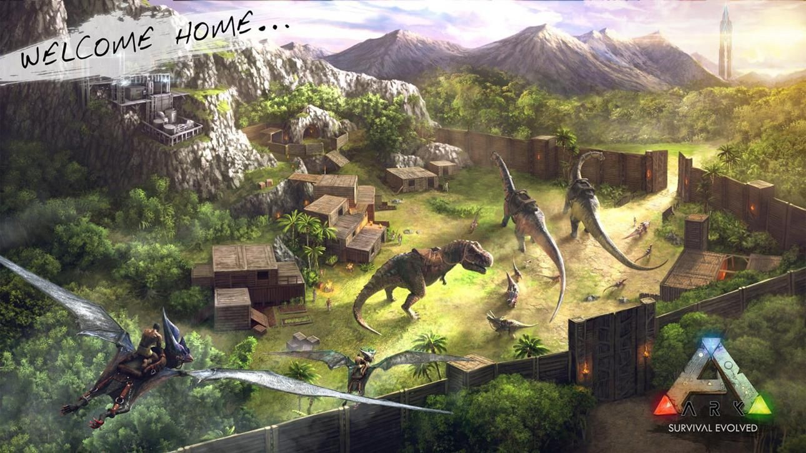
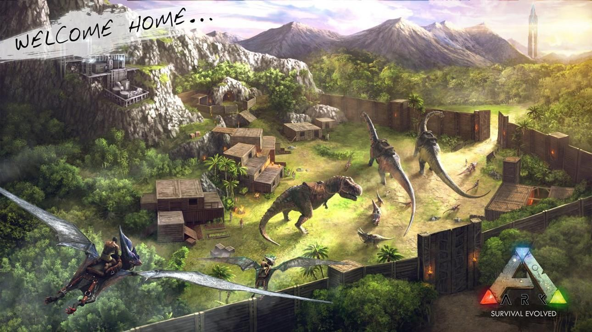

ARK: Survival Evolved
Mint férfi vagy nő, fázva, éhezve egy ARK nevű rejtelmes sziget partján rekedve meztelenül, vadásznod, alapanyagokat gyűjtened, tárgyakat gyártanod, növényeket termesztened, technológiákat kutatnod, és menedéket építened kell hogy ellenállj a környezetnek. Használd a ravaszságodat és a környezeted forrásait hogy megöld, megszelídítsd és tenyészd a leviatán dinoszauruszokat és más ősi lényeket melyek a földet járják, állj össze másokkal vagy zsákmányold ki a több száz másik játékost hogy túlélj, uralkodj... és elmenekülj!
Dinoszauruszok, Lények és Tenyésztés! -- több mint 50+ a korai hozzáférés elején és 100+ tervezett a végső kiadásnál -- megszelídíthető egy kihívásokkal teli kapd el&megkedvel eljárással, ami azzal jár hogy kiütöd a vad lényt és megfelelő étel segítségével ápolod amíg megkedvel. Amint megszelídítetted parancsokat adhatsz ki neki, amit attól függően végez el hogy milyen sikeresen szelídítetted meg és képezted ki. Kedvenceid, melyek további szinteket léphetnek étel fogyasztásával, súlyokat és tárgyakat is képesek cipelni, zsákmányt hoznak vissza a településedre az erejüktől függően és a nagyobb állatokat meg is lehet lovagolni, így közvetlenül irányítva őket! Repülj egy Pterodactyl-al a havas csúcsok felett, emeld át a szövetségeseidet az ellenség falain, versenyezz egy falka Raptorral a dzsungelben, taposs keresztül egy ellenséges bázison egy gigantikus Brontosaurusszal, vagy vadássz le egy zsákmányt egy őrjöngő T-Rex hátán! Vegyél részt egy dinamikus ökoszisztéma életében, saját vadász és zsákmány hierarchiával, ahol csak egy vagy a rengeteg faj közül akik az uralomért és túlélésért küzdenek. Kedvenceid párosodhatnak a másik nemmel, amivel így, gondosan megválogatva a tulajdonság rendszer segítségével, erősebb generációkat hozhatsz létre genetikai öröklődés elvén. Ez a folyamat magába foglalja a tojás alapú inkubációs és emlős terhesség idejét is! Vagy csak egyszerűen, tenyéssz és nevelj Dinó Babákat!
 
